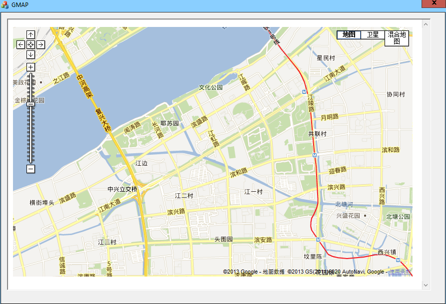

联系邮箱: scgaluo@qq.com
声明: 本站所有文章如非特别说明均为原创，转载请注明出处！
最进实验室的项目，需要用到GPS或者北斗定位，于是乎我的上位机部分就要实现地图界面，并且实现输入经纬度值在地图中实现显示。
到网上收了很多的关于Google地图方面的应用，我知道了要用到JAVASCRIPT这个脚本语言，我是没有接触过啊，瞬间觉得亚历山大。
于是乎，用了些时间来学JS，入手了才知道，对于一个有一定C++编程经验的我来说，不算是很难（小小的自恋一下）。。。。。
看得视频是李炎恢的，这位老湿讲的非常不错。你问我是怎么来的，百度搜索—JAVASCRIPT 百度网盘，就这样搜到了，（支持百度网盘。。。。）
下面就来介绍一下网上的基本成果了：
首先建立一个对话框的工程，添加Microsoft web Browser控件到对话框上，给他定义一个control类型的变量m_explorer,在OnintialDlg中添加如下代码
//一下几条语句是为了生成html文件的当前目录
CHAR szPath[255];//路径
memset(szPath, 0, sizeof(CHAR) * 255);//清空
GetCurrentDirectory(255, szPath);//获得当前目录
StrCat(szPath, _T("\\Google-earth.html"));//字符串串接，得到完整目录
m_explorer.Navigate(szPath,NULL,NULL,NULL,NULL);//加载Google-earth.html页面
上面代码的第五行中有一个目录文件Google-earth.html，这个就是JS实现的了,代码如下:
<!DOCTYPE html PUBLIC "-//W3C//DTD XHTML 1.0 Strict//EN"
"http://www.w3.org/TR/xhtml1/DTD/xhtml1-strict.dtd">
<html xmlns="http://www.w3.org/1999/xhtml" xmlns:v="urn:schemas-microsoft-com:vml">
<head>
<meta http-equiv="content-type" content="text/html; charset=gb2312"/><!--注意字符集设置为：gb2312，不会出现中文乱码-->
<title>Google 地图 JavaScript API 示例: 地图标记</title>
<script src="http://ditu.google.cn/maps?file=api&v=2&key=ABQIAAAAzr2EBOXUKnm_jVnk0OJI7xSosDVG8KKPE1-m51RBrvYughuyMxQ-i1QfUnH94QxWIa6N4U6MouMmBA&hl=zh-CN" type="text/javascript"></script>
<script type="text/javascript">
function initialize()
{
if( GBrowserIsCompatible() )//如果浏览器支持google地图
{
map = new GMap2(document.getElementById("map_canvas"));//定义一个地图变量，不加关键字var，表明是一个全局变量
map.setCenter(new GLatLng(22.536, 113.956), 14);//设置初始中心，缩放级别
//map.openInfoWindow(map.getCenter(),document.createTextNode("Hello, world"));//显示一个气泡信息
map.addControl(new GLargeMapControl());//增加大的缩放条
//map.addControl(new GSmallMapControl());//增加小的缩放条
map.addControl(new GMapTypeControl());//增加地图类型切换按钮
var point = new GLatLng(22.536, 113.956); //生成一个坐标点
map.addOverlay(new GMarker(point)); //增加一个地图标记
//GEvent.addListener(map, "click", function() {alert("click map");});//注册单击事件的监听器，设置响应函数
}
}
</script>
<script type="text/javascript">
function jsfunctiontest()<!--此函数会被VC中代码调用-->
{
alert("这是JS中的alert函数");
//map.panTo(new GLatLng(39.927,116.407));//跳转到指定坐标
}
</script>
<script type="text/javascript">
function TansTo(lat, lng)//转到指定位置，有两个参数，纬度和经度
{
//alert(lng);//测试参数是否传递过来
//var longi = parseFloat(lng);//后来才知道，不用类型转换，javascript可以自动转换
//var lati = parseFloat(lat);
map.panTo(new GLatLng(lat, lng));
}
</script>
</head>
<body onload="initialize()" onunload="GUnload()"> <!--//页面加载完成后执行initialize()函数-->
<div id="map_canvas" style="width: 800px; height: 500px"></div><!--定义名为map_canvas的DIV-->
</body>
</html>
这里面实现了什么功能，注释的就很清楚了。 编译运行程序，就可以实现最基本的功能了。 